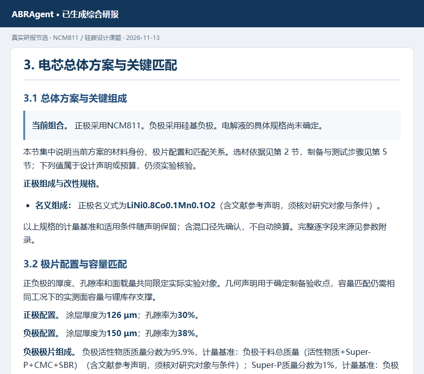
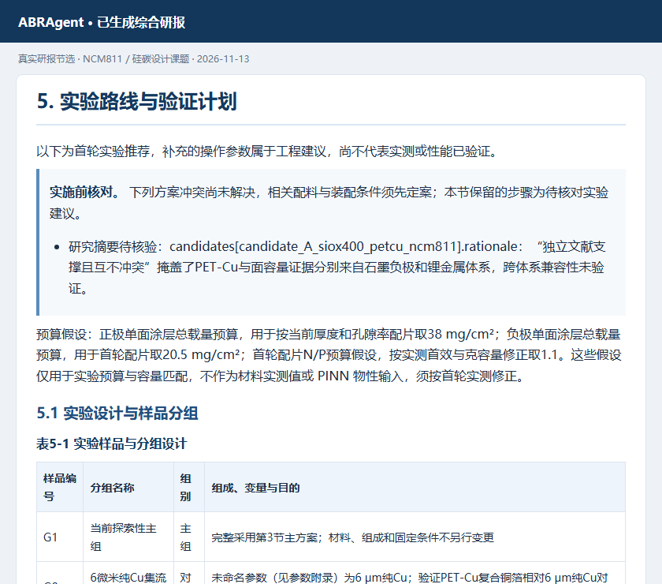
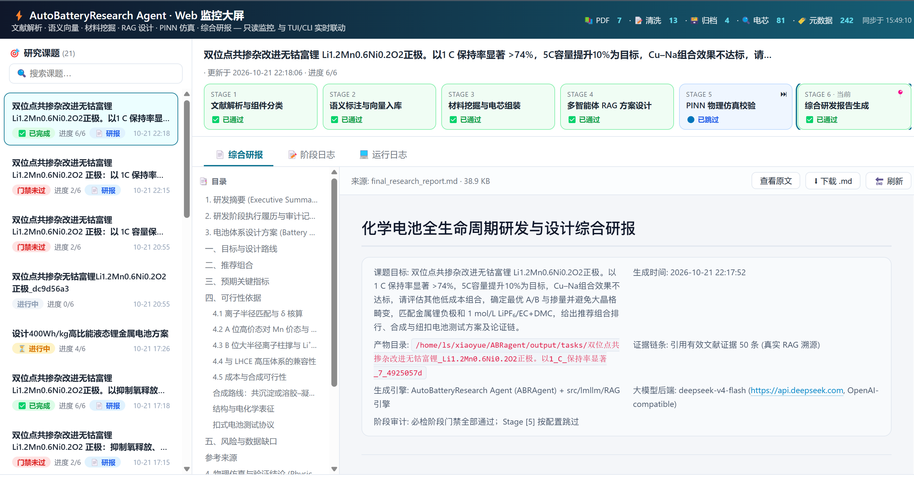

PROJECT 1
ABRAgent （Auto Battery Research Agent）
A traceable research workflow for battery design
From literature evidence to design proposals, physical evaluation and research reports.
Team member: Yingying Wu, Kaiquan Hu, Bingyu Cao
GitHub: CHEERUPGOGO/ABRagent
If you are interested in this research, please contact us at changyima@jlu.edu.cn.
01Overall research workflow
ABRAgent connects literature evidence, battery design, physics-based evaluation and a final research report in a traceable research loop.

02Knowledge preparation
Materials and performance data are extracted into a common structure while retaining their original sources. Material discovery, rule screening and unified extraction turn documents into a knowledge base for retrieval and material selection.


03RAG-based design generation
Research requests define target performance, evaluation metrics, electrode and electrolyte systems, formulation and operating constraints, and requirements for evidence and experimental validation.
Task planning · Planner
Break the goal into material systems, constraints and subquestions. Generate multiple queries and select literature or textbook sources as needed.
Hybrid retrieval · Retrieval
Combine semantic vector retrieval with BM25 keyword search. Fuse results with reciprocal rank fusion (RRF), remove duplicates and retain passage-level sources.
Design generation · Writer
Turn evidence into a structured proposal, including material-selection rationale, design parameters and structured claims.
Independent review · Reviewer
Check coverage of the original request, citation traceability and material compatibility using C1–C8 checks. Record issues and verify revisions.
04SPM-PINN physical evaluation
A dual-electrode single-particle-model physics-informed neural network (SPM-PINN) evaluates battery designs under solid-phase diffusion constraints, including governing equations, initial conditions and boundary conditions.
Design inputs
Electrode geometry, material properties and operating conditions.
Input checks
Check parameter ranges, the training envelope and consistency with the proposal. Repair out-of-range inputs before evaluation.
Physical evaluation
Run the dual-electrode SPM-PINN to obtain discharge curves, capacity and specific energy.
Target comparison and revision
Compare predicted performance with the target and tolerance. Revise parameters when needed, then check inputs and evaluate again.
Physical-evaluation example
The presentation compares PINN predictions with a numerical reference solution and shows discharge responses across three iterations.
Converted specific energy
- Initial design
- 214.2 Wh kg⁻¹
- Revision 1
- 273.2 Wh kg⁻¹
- Revision 2
- 287.8 Wh kg⁻¹
Values from the physical-evaluation example in the presentation.
05Final research report
The final report combines material-selection evidence, the final cell design and an experimental validation plan, while retaining citations, evidence gaps and applicability boundaries.


06Web monitoring
The web interface brings together progress across research topics, stage outputs and final reports so that the research process can be inspected and tracked.

07Terminal monitoring
The terminal user interface (TUI) displays tasks, tool calls and gate status during execution, supporting autonomous operation and process diagnosis.

08Case study: cathode material design
The case in the presentation follows a change from an initial K/F co-doping concept to Cu–Na and Zn–Na doping proposals, followed by experimental validation.